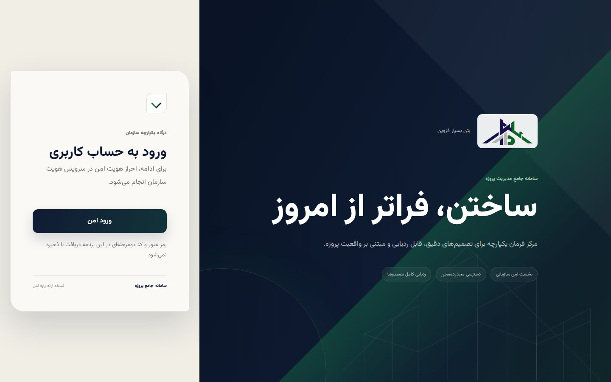
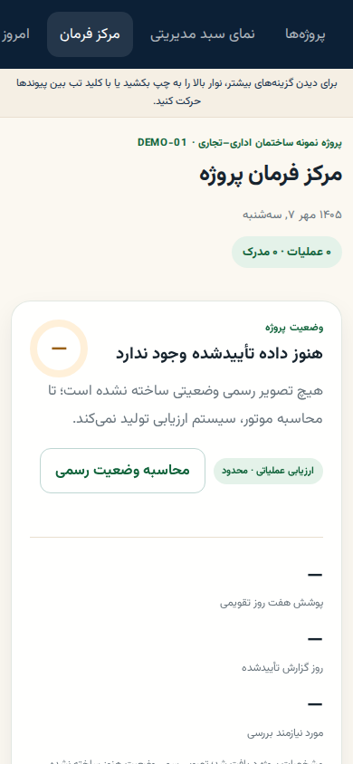
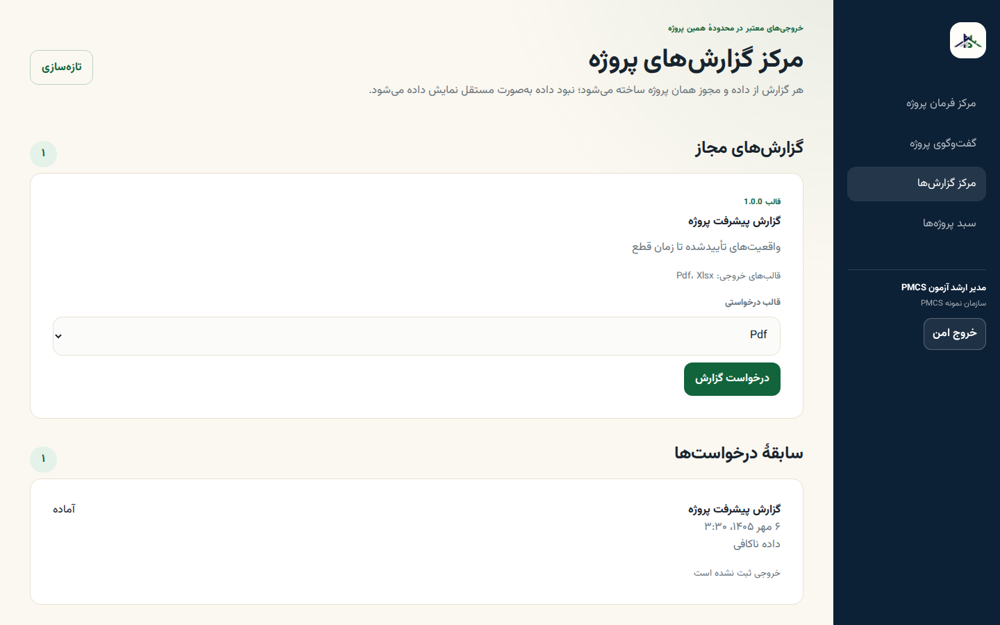
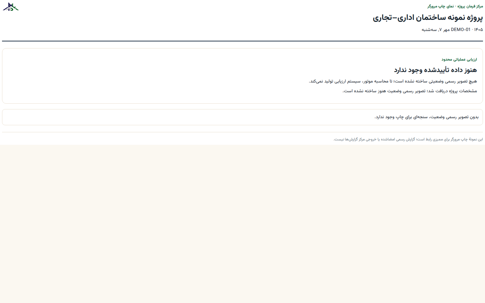
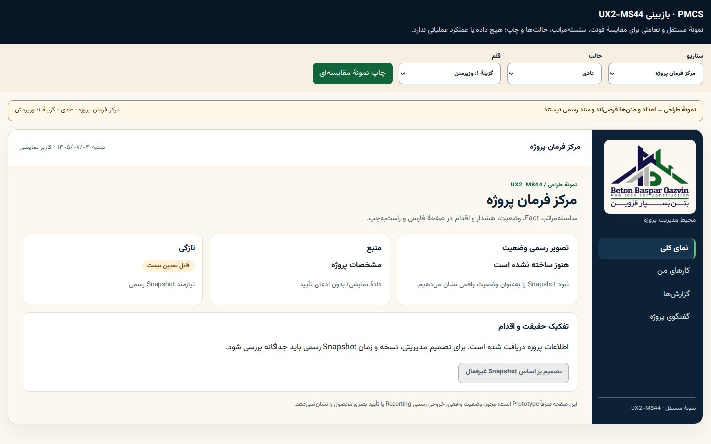
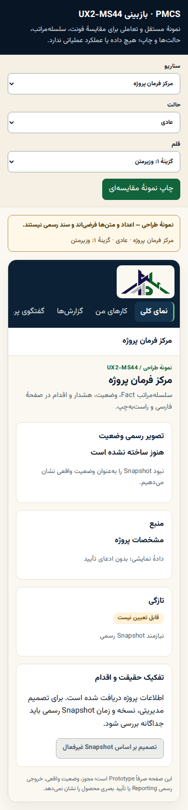
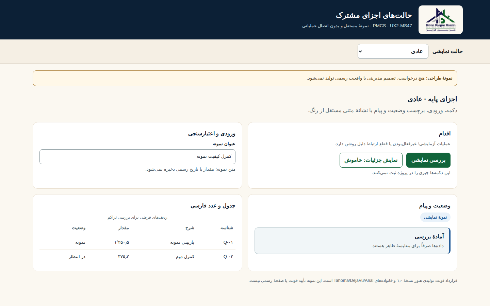
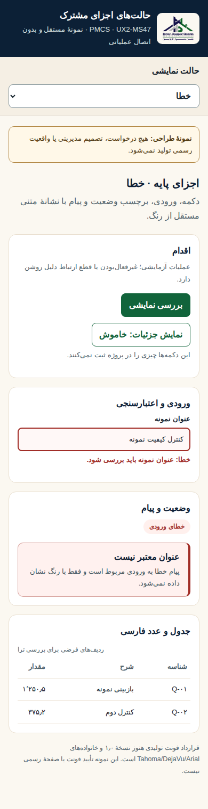
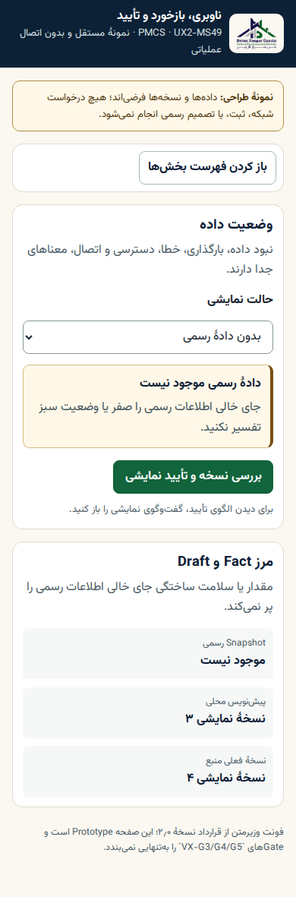
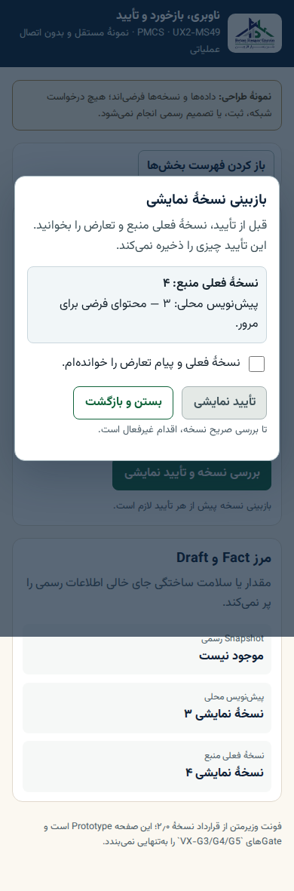

VX-G3، مهاجرت VX-G4 و Qualification VX-G5 با این صفحه بهتنهایی اعلام نمیشوند.چه چیزی را بررسی کنیم؟
نمونههای واقعی UI فعال در کنار Prototypeهای کنترلشده آمدهاند. روی هر تصویر کلیک کنید تا فایل کامل با ابعاد اصلی باز شود.
- هویت برند، سلسلهمراتب و خوانایی وزیرمتن در فارسی/RTL
- تراکم سبد، مرکز فرمان، گزارش و برگهٔ چاپ
- حالتهای خطا/آفلاین و Action غیرفعال با متن مستقل از رنگ
- Navigation و Dialog در موبایل و پاسخ به صفحهکلید
نمونههای تعاملی
انتخابگر سناریو، حالت، Focus و Dialog را در فایلهای مستقل باز کنید:
UI فعال · شاهد فعلی
چهار قاب از Run 425؛ اینها وضعیت اجراشدهاند، نه طرح پیشنهادی آینده.


ورود و برند
ترکیب گرم، کنتراست تیتر و اقدام اصلی.


مرکز فرمان موبایل
ناوبری افقی فعلی هنوز جایگزین نشده و در VX-G4 باز است.


مرکز گزارش
تراکم فرم، وضعیت درخواست و مرز دادهٔ مجاز.


چاپ مرورگر
برگهٔ یکصفحهای A4 با نبود Snapshot رسمی.
جهت بصری و خوانایی
دو قاب وزیرمتن از Prototype MS44؛ دادهها فرضیاند.


مرکز فرمان دسکتاپ
سلسلهمراتب، رنگ وضعیت و متن مدیریتی پرتراکم.


مرکز فرمان موبایل
خوانایی تیتر و ارقام در عرض محدود.
قرارداد Stateهای پایه
دو قاب از MS47؛ تعاملهای Keyboard و قفل Action در Prototype آزموده شدهاند.


حالت عادی
Action، Field، Status، Feedback و جدول فارسی.


خطای موبایل
Label/Error و پیام مستقل از رنگ.
ناوبری و تأیید نسخه
دو قاب از MS49؛ جایگزین موبایل و Dialog هنوز در UI فعال مهاجرت نکردهاند.


فهرست جمعشونده
Action آشکار و عرض ۳۲۰px بدون overflow.


بازبینی نسخه
Tab/Shift+Tab، Escape و بازگشت Focus آزموده شدهاند.
معیار بازبینی Gate
- آیا ترکیب Login، Shell، سبد، مرکز فرمان، Chat، گزارش و Intelligence با جهت مصوب سازگار است؟ سناریوهای دیگر در Prototype MS44 قابل انتخاباند.
- آیا وزیرمتن در تیتر، فرم، جدول، ارقام شمسی و چاپ خواناست؟ Goldenهای رسمی MS48 جداگانه pin شدهاند.
- آیا Error، Offline، Permission، NoData، Loading و Conflict با متن روشن از Fact جدا میمانند؟
- آیا Navigation موبایل و Dialog نمونه، Focus و Actionهای حساس را روشن و قابل کنترل میکنند؟
پس از بازبینی، نتیجهٔ مالک برای VX-G3 جداگانه ثبت میشود. سپس مسیرهای فعال در VX-G4 مهاجرت و در VX-G5 با Accessibility، Responsive، cross-browser، Print و Performance سنجیده میشوند.
منشأ و تمامیت فایلها
ده تصویر این بسته بدون ویرایش از Artifactهای GitHub Runs 412، 419، 425 و 429 کپی شدهاند. Source Commit، Artifact ID، digest ZIP و SHA/حجم/ابعاد هر تصویر در manifest تصویرها ثبت است.
Chat فقط گروه پروژه است؛ این بسته دادهٔ عملیاتی، UAT یا مجوز انتشار تولیدی نیست.